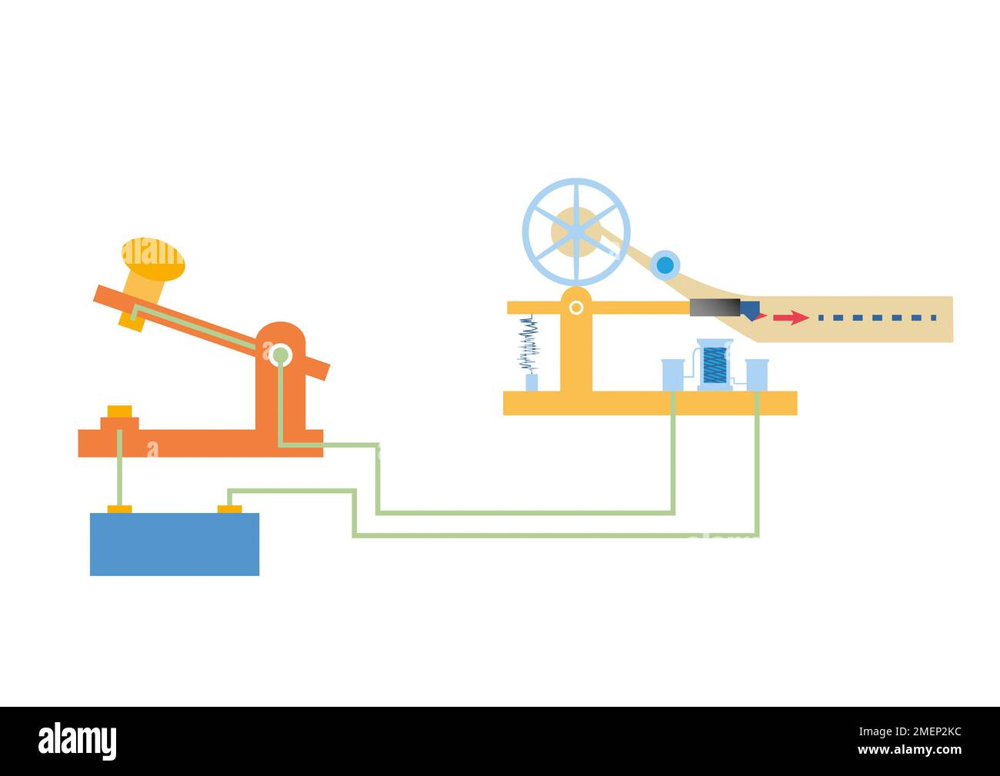

Telegraph & Morse Code
Topic 9 — How the first electrical long-distance messaging system worked, and how dots and dashes became a universal encoding scheme. By AMO AIKINS JOSEPH.
9 History of the Telegraph
The electric telegraph (1830s–1840s) was one of the first technologies to send information faster than a horse or ship. Samuel F.B. Morse, Alfred Vail, and others developed a practical system using a single wire and a binary-like code.
- 1844 — First official Morse message in the U.S.: “What hath God wrought” (Washington to Baltimore)
- Undersea cables — Later connected continents (e.g. transatlantic cable, 1866)
- Impact — News, railways, military orders, and commerce could coordinate across distance
The telegraph is a foundation of data communication: it encodes text, transmits symbols over a medium, and decodes them at the receiver—the same pattern used by modern digital networks.
How the Telegraph Works
A basic telegraph circuit is a closed loop of wire connecting a sender’s key, a battery, and a receiver’s electromagnetic sounder (or relay).
- Operator presses the key → electrical current flows through the line.
- Current energizes the sounder at the far end → audible click.
- Short press = dot (·); longer press = dash (−).
- Patterns of dots and dashes represent letters and numbers (Morse code).
- Skilled operators could send and read 20–40 words per minute.
Current flows → receiver clicks (mark).
No current → silence between symbols (space).
Diagram of a Telegraph
The diagram below shows a simple one-wire telegraph circuit: sender (key + battery), transmission line, and receiver (sounder with ground). This is the classic loop used to teach early data communication.

Morse Code
Morse code maps each character to a unique sequence of dots (·) and dashes (−). Timing rules matter: short gap between parts of a letter, longer gap between letters, and longer still between words.
International Morse — sample alphabet
| Letter | Morse | Letter | Morse |
|---|---|---|---|
| A | · − | N | − · |
| B | − · · · | O | − − − |
| C | − · − · | P | · − − · |
| D | − · · | Q | − − · − |
| E | · | R | · − · |
| F | · · − · | S | · · · |
| G | − − · | T | − |
| H | · · · · | U | · · − |
| I | · · | V | · · · − |
| J | · − − − | W | · − − |
| K | − · − | X | − · · − |
| L | · − · · | Y | − · − − |
| M | − − | Z | − − · · |
Example message
SOS (distress signal):
· · · − − − · · ·
“SOS” in Morse — three dots, three dashes, three dots (no spaces between letters in the standard distress call).
Numbers (0–9)
0 = − − − − − | 1 = · − − − − | 2 = · · − − − | 3 = · · · − − | 4 = · · · · − | 5 = · · · · · | 6 = − · · · · | 7 = − − · · · | 8 = − − − · · | 9 = − − − − ·
From Telegraph to Digital
Morse code and telegraphy introduced ideas still used in modern systems:
- Encoding — symbols represent data (today: ASCII, Unicode, binary)
- Modulation — turning key presses into on/off signals (today: digital line codes)
- Multiplexing — multiple messages on one wire (today: packet switching)
- Human + machine readability — SOS is still recognized worldwide